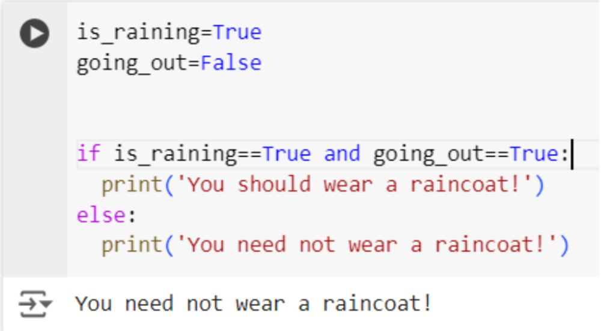

Logical operators are used to combine 2 or more conditions.
There are 3 logical operators in Python:
Let’s understand them with simple examples!
and
Let’s say, you have to make a small decision to wear a
raincoat or not. Tell me how will you decide that?
If it is raining and you are going out, then you will wear a
raincoat, right?
How will that look in the code?
Now here, if either of the 2 conditions becomes false, let’s
say it is not raining or you are not going out, then you would
not be wearing a raincoat. Let’s try to change these
conditions and see what happens:
- Not raining and going out
- Raining but not going out

- Not raining and not going out
As you can see here, the and operator checks if
both the conditions are true; only then the entire expression
is true. If either of the conditions is false, it becomes
false.
or
Let’s consider another situation.
Let’s say, you will start doing a project if you have a free
afternoon or feel inspired. Let’s see what that decision would
look like in code.
Here we are saying:
- Free afternoon but not inspired
- No free afternoon but inspired
- Free afternoon and inspired
- No free afternoon and not inspired

So here we can say, the or operator requires at
least one condition to be true to make the expression true.
Expression is a combination of 2 or more conditions.
not
Let’s have a look at another situation.
When do we wear a sweater? When it is cold. Can we also say we
wear a sweater when it is not warm? Let’s see what that
decision of wearing a sweater would look like in coding!
What a not operator does is, it inverts the value
of the expression. Here you can see is_warm has a
False value in the first case, and from our knowledge of the
if block, we know that only if the condition is true, the
statements inside the block get executed. So what a
not operator does is, it just inverts the value
of the expression.
Now that you have an idea about how logical operators and
nested if blocks are, it’s time for today’s challenge!